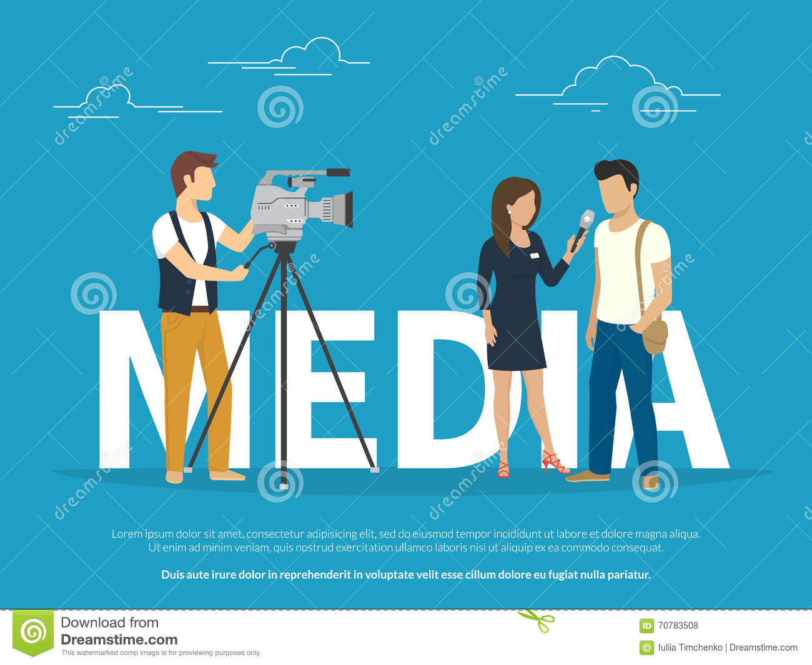

The term refers to components of the mass media communications industry,
such as print media, publishing, the news media, photography, cinema, broadcasting
(radio and television), digital media, and advertising
What is the media today?
Media Today uses convergence as a lens that puts students at the center of the profound
changes in the 21st century media world. ... The book's media systems approach helps students
to look carefully at how media content is created, distributed, and exhibited in
the new world that the digital revolution has created.


Social media is a collective term for websites and applications that
focus on communication, community-based input, interaction, content-sharing and
collaboration. ... Mobile applications make these platforms easily accessible.
Some popular examples of general social media platforms include Twitter, Facebook and LinkedIn.